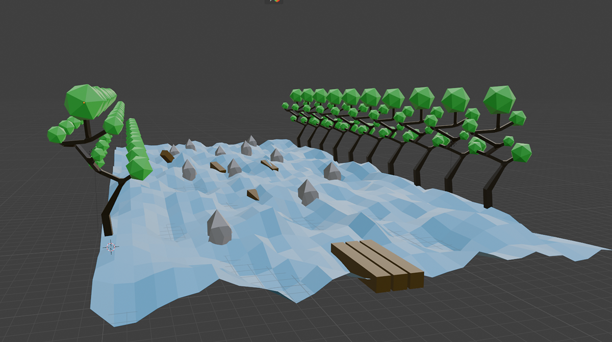
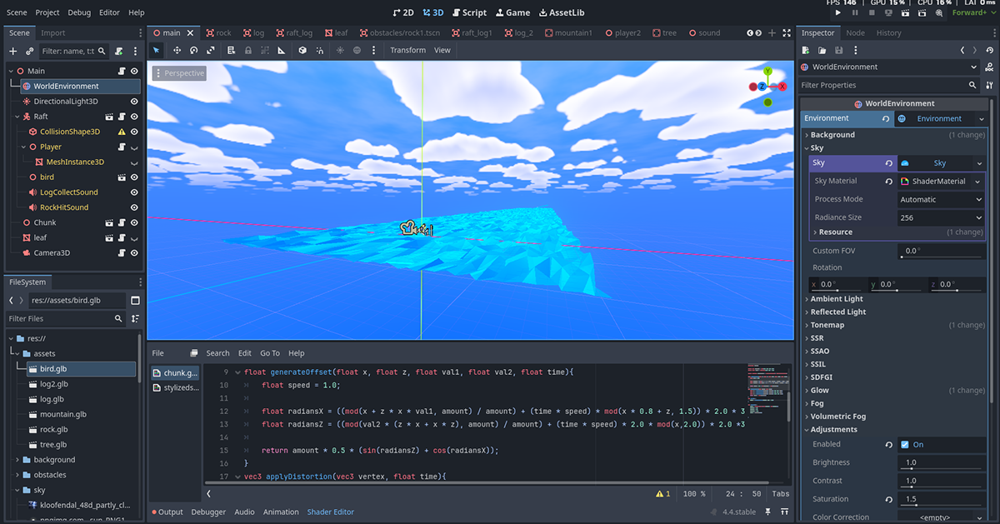
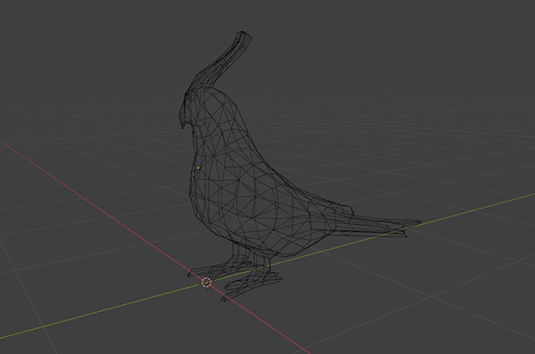
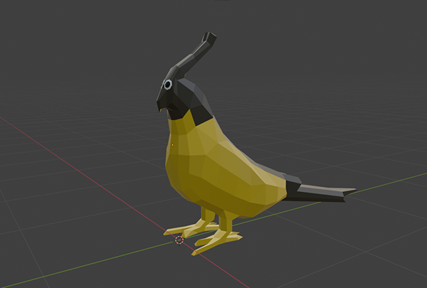
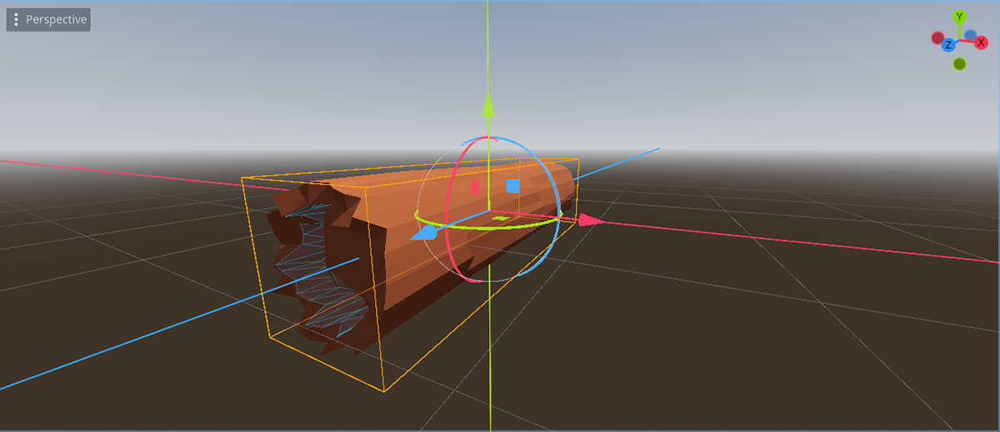
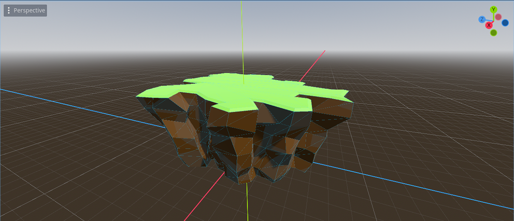
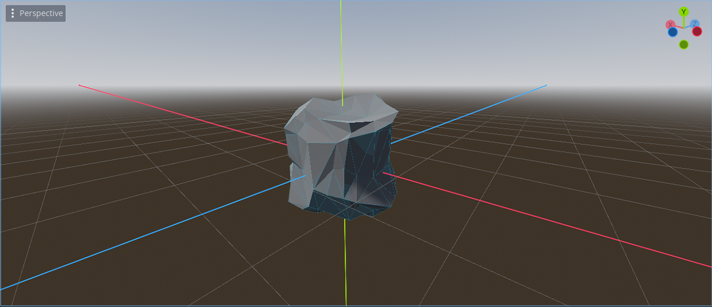
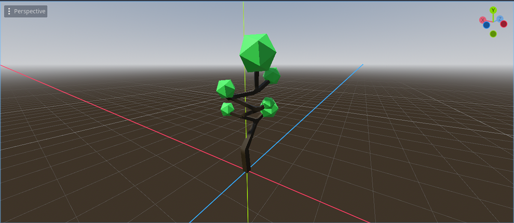

Production Frames









Rapid Rush is a fast-paced Godot prototype built to study failure as feedback. Each run gives only seconds to collect logs; succeed and the target rises, fail and the world hard-resets— pushing a rapid loop of attempt → read → adjust → retry.
The design centers on readable cues, instant restarts, and escalating stakes, so failure isn’t a setback but the primary teacher, sharpening player judgment and pacing with every run.
Built mechanics-first with assets added after, the project foregrounds systems design, iteration speed, and the craft of making losing feel meaningful—and addictive.